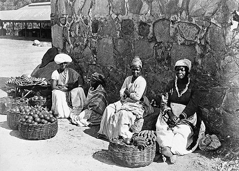
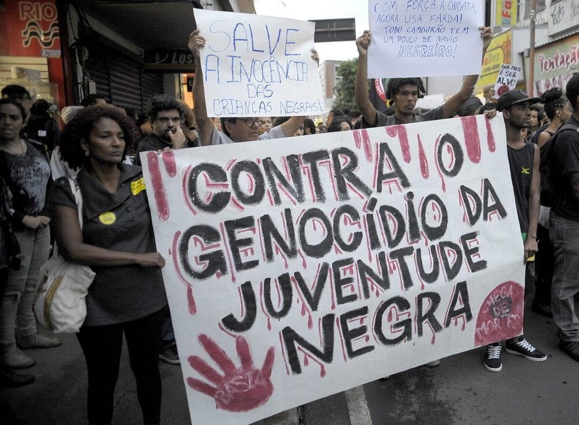

Racismo
O racismo é uma forma de preconceito cruel, motivado pela cor da pele de uma pessoa, que ainda atinge uma grande parcela da população mundial. Nas formas mais agudas, o preconceito racial pode servir de pretexto para motivar agressões físicas ou verbais, além de causar dano moral e até perseguições e prisões injustas, principalmente de negros. 75% das vítimas de homicídio no País são negras

Racismo enraizado
No Brasil, as causas do racismo podem ser associadas, principalmente, à longa escravização de povos de origem africana e a tardia abolição da escravidão, que foi feita de maneira irresponsável, pois não se preocupou em inserir os escravos libertos na educação e no mercado de trabalho, resultando em um sistema de marginalização que perdura até hoje. Pretos ou pardos estavam 73,5% mais expostos a viver em um domicílio com condições precárias do que brancos.
Atualmente
A violência letal intencional no Brasil cresce contra negros e regride contra não negros, a taxa de homicídios de indivíduos não negros diminuiu 6,8%. No mesmo período, a taxa entre a população negra saltou 23,1% e foi a maior registrada desde 2006. Esse quadro é ainda mais aterrador para a juventude negra: 77% dos jovens assassinados no Brasil são negros. A cada 23 minutos, um jovem negro é assassinado no Brasil. São 63 mortes por dia, que totalizam 23 mil vidas negras perdidas pela violência letal por ano.
